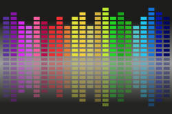

Wh-questions

You will hear a good deal about these words if you are taking an initial training course. Unfortunately, you may also hear a good deal which is wrong.
You may, at the outset, have noted that the word how is included in the list above but that it doesn't start with wh-. That's true. Nevertheless, it appears in this guide and is traditionally included in the group because it exhibits similar characteristics.
Making questions |
Not only do these words make questions,
the reason they do so is to do with their meaning. They all
have the general meaning of
I do not know what this refers to so
tell me.
We'll consider the 9 main wh- words: how,
what, when, where, why, who, whom, which, whose. We will
consider them in isolation and talk about what else they do
later.
We can elicit all sorts of information using these nine words.
- How did you know? (manner)
- What was she wearing? (thing)
- Where did they go? (place)
- When did they go? (time)
- Why was she crying? (reason)
- Who told you? (subject person)
- Who(m) did you tell? (object person )
- Which do you want? (choice of thing)
- Whose is that hat? (possessive for person)
Think for a moment about the answers to these questions. What do you notice? Click here when you have a response.
- How questions are normally answered by using a
whole sentence and here an example might be
How did you know?
Mary told me
It is unlikely that an answer would be
Immediately
but that is possible. Adverbs are sometimes what the question is getting at as in e.g.,
How was he driving?
Very carefully
but that is a fairly rare event. - What questions are almost always directed at
non-human nouns or noun phrases so an answer to the question
might be something like
What was she wearing?
Jeans and a T-shirt
What questions rarely refer to humans and we prefer
Which person did you ask?
over
What person did you ask? - Where questions are used to elicit spatial
information. The answer will normally be a place or a
prepositional phrase, e.g.:
Where did they go?
To London
London
Into the house - When questions usually elicit a time, a
prepositional phrase or a clause so possible answers are
When did they go?
At 6
After lunch
When everyone had finished - Why questions are also normally answered with whole
sentences (sometimes much more) or clauses beginning with a word
like because such as:
Why was she crying?
Because it was so sad
Because he'd been so rude
We can omit the word because although it is always implied as in, e.g.:
The car had broken down again
These questions also frequently elicit a clause beginning with to, in order to and so that:
To make him feel guilty
In order to make him feel guilty
So that we'd take pity on her - Who questions traditionally refer to people as the
subject of the verb but also, frequently, to the object.
They always refer to people, never inanimate objects and rarely
non-humans. Answers might be:
Who told you?
John
The man in the shop
Those people - Whom questions can only be reference to human
objects of the verb. Possible answers might be:
Whom did you tell?
John
The man in the shop
Those people
In colloquial English whom is frequently replaced by who so the question could easily have been
Who did you tell?
but it still refers to the object, not the subject of the verb. - Which questions imply a choice from a limited
number of options that the questioner is aware of. They
can apply to people and to non-animate items.
Which do you want?
almost certainly refers to things, not people and implies a limited choice of items to choose from.
possible answers might be:
That one
The blue one
A plain one
If which questions are used to refer to people, they must be accompanied by a noun such as girl, boy, man, person, customer etc., all of which refer to classes of people. The question cannot usually be:
Which did you tell?
but could be
Which police officer did you tell?
Possible answers might be:
The tall one
Him
That one - Whose questions refer to people and very rarely to
animals, never to inanimate objects. Possible answers will
include the possessive 's marker or involve the use of
the possessive pronoun:
Whose is that hat?
John's
Your mother's
His
 |
What is not possible |
There are some things that wh-questions cannot elicit. For example:
- We cannot ask about what are called dummy subjects. We
can say
It got very windy yesterday
but the question
What got very windy yesterday?
is meaningless because the answer would be it.
Occasionally, in spoken English this is possible so we allow, perhaps:
It got broken
What go broken?
The table. - We cannot ask about the adjective complements of linking
verbs such as appear, grow, become, seem etc. We
can say
John appeared tired
She was exhausted
They grew angry
but the questions
What did John appear?
What was she?
What did they grow?
are not possible without altering the meaning. - We cannot ask about the verb. We can say
She told her mother a lie
They chose him
but the questions
*What did she her mother?
*What did they him?
are nonsense.
 |
Why is this important? |
This is important because other languages handle interrogatives very differently and the peculiar restrictions of applicability to humans, non-humans and inanimate objects and restricted choices, for example, do not apply universally to all languages as they do to English. The area needs to be taught.
|  |
Intonation |
Think for a moment about how you would say these two questions and try to figure whether your voice rises or falls towards the end.
- Are you coming to the meeting?
- What time is the meeting?
Say them aloud and then click here.
Question intonation on questions
formed with wh-words like:
What time is the meeting?
generally falls, but on a question such as
Are you coming to the meeting?
it tends to rise. The effect can be represented like
this:

This is not an absolute rule – very little of intonation
contains such things – but it is a clear tendency. Many
languages rely solely on intonation to make questions from
statements and English has that ability, too, in questions such as
You are going to London?
in which the intonation rises sharply along with voice pitch to
express disbelief or surprise. This is often rendered in
writing by double question marks and/or exclamation marks.
This is an area that needs to be taught because many learners will
assume that intonation always rises on questions and are in danger
of sounding rude and demanding if they do this with wh-questions.
 |
Forming wh-questions |
Consider these questions and see if you can work out what the problems for learners are with the form of the questions.
- Who broke the glass?
- Which letter did you lose?
- How long have you been here?
- Whose car hit the gate?
- Why were you late?
- When are you going to tell her?
- What comes next?
- Where is the meeting?
- Whom did you see?
Click here when you have done that.
- It matters a lot if the wh-word is the subject of
the sentence or not. In questions 1., 4. and 7, the wh-phrase
is the subject
of the verb and the order of words which follow it is unchanged
from a simple positive statement. We merely replace the
subject noun or noun phrase without disturbing the word order.
For example:
Positive sentence vs. Wh-question The boys from over the road broke the glass Who broke the glass? John's car hit the gate Whose car hit the gate? The marching band from Baltimore comes next What comes next? - In all the other questions the order of words after the
wh- word is changed to reflect the fact that it is a
question form. In other words, we add the wh-word to the
normal question form. When the question word refers to the
object of the verb we get a pattern like this:
Normal question vs. Wh-question Did you lose a letter? Which letter did you lose? Did you see anyone? Whom/Who did you see? - In the examples where the wh-word refers to the complement
(rather than the object) of the verb, the same patterns occur
Normal question vs. Wh-question Have you been here long? How long have you been here? Were you late? Why were you late? Are you going to tell her? When are you going to tell her? Is the meeting here? Where is the meeting?
This is a complication which many other languages do not share so it is a source of errors such as:
- *Who did break the glass?
- *What does come next?
- *Why you are late?
- *When you are going to tell her?
etc.
 |
Complications with how |
As we saw in the first set of examples, most wh-words have a straightforward meaning. The word how is somewhat different. What does it mean in these examples?
- How long have you been waiting?
- How often does she do that?
- How much does he want the job?
- How long is the journey?
- How are you?
- How was the trip?
- How interesting did you find it?
- How many do we need?
Click here when you have 8 meanings clear. Thinking of possible answers to the questions makes that easier.
- How long have you been waiting?
Les than ten minutes
Referring to duration - How often does she do that?
Seldom
Referring to frequency - How much does he want the job?
Very badly
Referring to intensity - How long is the journey?
Three miles / More than a day's drive
Referring to distance or duration - How are you?
Fine
Referring to personal feeling - How was the trip?
Very comfortable
Referring to quality - How interesting did you find it?
Not particularly
Referring to extent - How many do we need?
At least a dozen
Referring to quantity
The issue here is the word is followed by a range of other items (quantifiers, adverbs, adjectives etc.) and its meaning alters considerably. Other languages do not have such a common multiword so the area needs handling carefully. Learners can easily become confused.
The word what also exhibits multiple meanings but to a
lesser extent. We can have, for example:
What did you tell her? (referring to something said)
What can I help you with? (referring to to an action)
What flight are you on? (referring to a noun phrase)
 |
Formality and prepositions |
Formality in English requires the wh-word to be accompanied by its preposition so we get, e.g.:
| Formal question | vs. | Informal question |
| With whom did you come? | Who did you come with? | |
| For what did he ask? | What did he ask for? | |
| With which officer did you speak? | Which officer did you speak with |
That's the general rule but the longer the clause
between the wh-word and the preposition, the more difficult
it gets to construct an informal sentence. Would you accept,
e.g.,
What did you use to get the awful mess out of the pipe and clear
away all the dirty water from the sink with?
or
What time are you going to ask them all and their friends from
Holland to meet us under the pier at?
 |
Emphasising wh-questions |
The most frequent way to emphasise wh-questions is the use of the word ever. For example
- Who ever did that?
- How ever did you manage it?
- Which ever did you choose?
- How ever long have you been waiting?
- Why ever were you late?
- Whose ever car was that?
- When ever are you going to finish?
- What ever did she mean?
- Where ever can she be?
- Whom ever did you tell?
Some things to note:
- There are other popular emphasisers such as the hell, in heaven's name, on earth etc.
- These are normally written as two words to distinguish their
function. When they are written as one word, they often
mean It doesn't matter who/what/when/how/which etc.
For example
Whoever comes late must sit over there
is not emphatic; it means anyone who comes late.
He leaves whenever he feels a little tired
is also not emphatic; it functions as a subordinating conjunction just as when does. The same applies to
You can sit wherever you like
and to many other -ever words. - The emphatic why ever only occurs as two words in English.
| Related guides | |
| negatives and questions | for a more on these two areas |
| tag questions | an essential guide to how these and what they do |
| interrogatives | for a much more technical guide in the in-service section to the whole area |